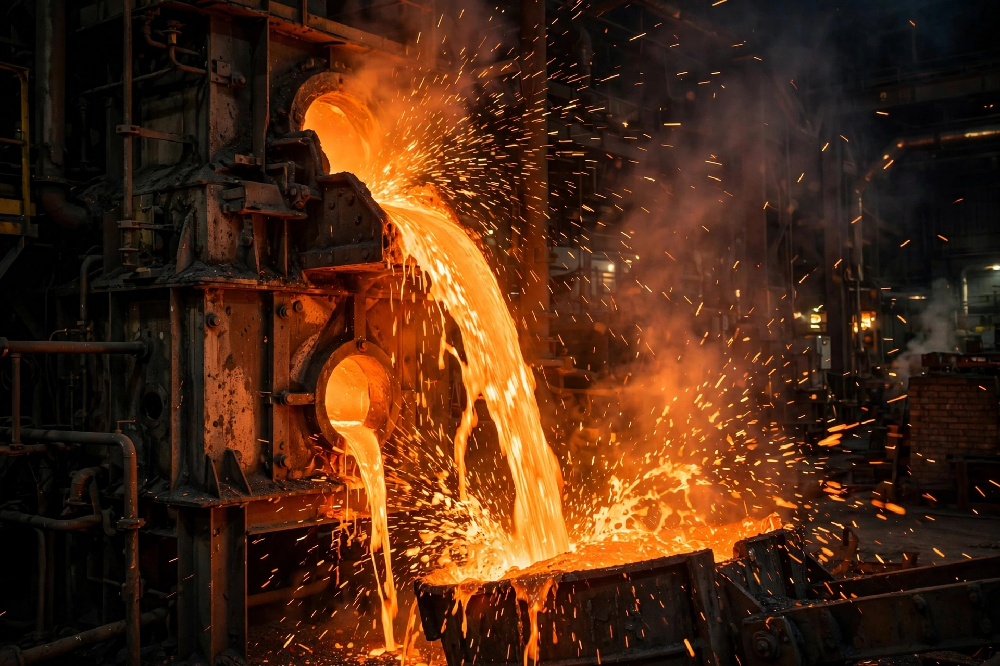

Smelting is a process of applying heat and a chemical reducing agent to an ore to extract a desired base metal. It is a form of extractive metallurgy used to extract metals such as iron, copper, lead, and aluminium from their ores.

Smelting involves heating ore beyond its melting point with a flux and reducing agent such as coke or charcoal. Carbon removes oxygen from metal oxides as carbon dioxide/monoxide, leaving molten metal and slag. Iron is smelted in a blast furnace; copper often via flash smelting.
Copper smelting dates to around 5000 BC in the Balkans and Near East, followed by tin-bronze, then iron smelting from about 1200 BC, ushering in the Iron Age. Industrial smelting drove the Industrial Revolution but also major pollution.
Smelters emit sulfur dioxide, heavy metals and particulates; historic sites such as Sudbury, Ontario became notorious for environmental damage. See metallurgy and blast furnace.